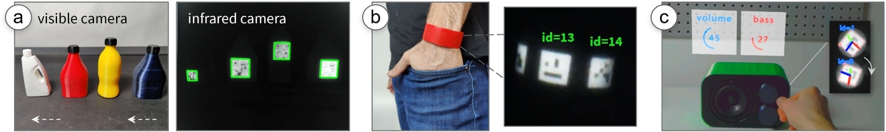

Since 2017 © MIT CSAIL (HCI Engineering group) [redesign by
moji
].
All Rights Reserved.



Figure 1: BrightMarkers are embedded into objects using a NIR-fluorescent filament. (a) When viewed with a NIR camera with the matching filter, the markers appear with high contrast, which allows them to be tracked even when the objects are in motion, e.g., on a conveyor belt. (b) BrightMarker can be used to fabricate custom wearables for tracking, or (c) for transforming physical controls into precise input methods in mixed reality environments.
Existing invisible object tagging methods are prone to low resolution, which impedes tracking performance. We present BrightMarker, a fabrication method that uses fluorescent filaments to embed easily trackable markers in 3D printed color objects. By using an infrared-fluorescent filament that "shifts" the wavelength of the incident light, our optical detection setup filters out all the noise to only have the markers present in the infrared camera image. The high contrast of the markers allows us to track them robustly regardless of the moving objects’ surface color.
We built a software interface for automatically embedding these markers for the input object geometry, and hardware modules that can be attached to existing mobile devices and AR/VR headsets. Our image processing pipeline robustly localizes the markers in real time from the captured images.
BrightMarker can be used in a variety of applications, such as custom fabricated wearables for motion capture, tangible interfaces for AR/VR, rapid product tracking, and privacy-preserving night vision. BrightMarker exceeds the detection rate of state-of-the-art invisible marking, and even small markers (1"x1") can be tracked at distances exceeding 2m.
Tags and markers play a vital role in interactions with objects in human-computer interaction (HCI). The ability to identify and track objects in real time enables a wide range of applications, such as motion capture for animation and gaming [7, 66], augmented and virtual reality (AR/VR) [2, 52], and object tracking for industrial and robotic applications [16, 59].
In recent years, the need for invisible object tagging has become increasingly important. The ability to track objects without the markers having a bulky form factor or being in the user's direct view allows for a more natural and immersive experience for users, and opens up new possibilities for tracking objects in real-life scenarios where visible markers would be impractical and obtrusive.
However, existing methods for invisible object tagging have several limitations that impede their widespread adoption. One significant limitation is their low signal-to-noise (SNR) ratio, i.e., the poor resolution and clarity of the imaged marker. Because invisible markers are embedded in the interior of objects, the markers are imaged from a weak signal, which needs to be amplified by optical and digital processes [30, 64]. These processes result in long capture or decoding times, typically ranging from seconds to minutes per frame. This deteriorates further when objects are in motion, i.e., the captured markers appear blurrier and are thus unidentified in most frames. In addition, existing invisible tags are often limited in terms of the variety of object colors they can be used with. For example, InfraredTags [13] embedded 3D printed codes in black objects, and AirCode [30] in white objects.
To address these limitations, we present BrightMarker, a fabrication method for passive invisible tags using fluorescent filaments that emit light in a specific near-infrared (NIR) wavelength, which NIR cameras can robustly detect. By isolating the markers from the rest of the scene using the matching filter, we are able to robustly track markers even when objects are in motion. Our work builds on InfraredTags and addresses the limitations in regard to marker resolution and object colors by enhancing detection. We were inspired by the motion capture system OptiTrack, which uses passive retro-reflective markers that reflect the shined IR to the camera.
We demonstrate the potential of BrightMarker by showcasing various applications, including product tracking on conveyor belts, flexible wearables for motion capture, tangible and haptic interfaces for AR/VR, and privacy-preserving night vision. Our technical evaluation shows that the markers embedded in a variety of surface colors can be detected robustly and in real time as they move.
We believe that BrightMarker is a promising approach that could significantly improve the performance and versatility of invisible object tagging and have a wide range of potential HCI applications.
In summary, we make the following contributions:
In this section, we explain previous work on motion capture approaches, invisible marker systems in the fabrication literature, as well as the infrared-based materials used in these systems.
Motion capture, abbreviated as "mocap," describes the technologies used to capture, track, and digitize physical objects and humans in real time. Existing motion capture systems are typically based on external markers, i.e., a tracking marker needs to be separately attached to the objects that are intended to be tracked. Such markers are typically based on inertial or optical methods. Inertial systems use gyroscopes and accelerometers to measure the orientation and acceleration of objects (e.g., Xsens [46]). Optical methods use cameras to track markers mounted on objects and software to translate the marker positions into motion data.
Widely used optical systems, such as OptiTrack [20] and Vicon [36], offer active and passive optical markers that can be tracked by setting up multiple cameras in the environment. Active markers commonly include LEDs [38], which are picked up by these cameras, or sensors that detect the IR radiation emitted by nearby light sources. Such markers require an embedded power source and can be large compared to the object, (e.g., Vive Tracker [5] is >7cm in two dimensions). Passive markers, on the other hand, are beads coated with a retro-reflective material that reflects the light shined by the detection hardware [2]. Whether active or passive, optical methods require multiple cameras to be set up and calibrated to accurately track objects, which can be both time-consuming and costly (e.g., a 6-camera OptiTrack system costs >$9k). Furthermore, given that these markers are external, they need to be attached to objects, which limits their use and practicality in real-world use.
BrightMarker aims to overcome these limitations by using embeddable fluorescent materials to create passive tracking markers that can be integrated into real-world objects and tracked using just one camera. This allows for more affordable, versatile, and unobtrusive tracking of objects in real-world applications without the need for manual and visible attachment of markers.
To move away from external tracking markers that are manually attached to objects, researchers proposed integrated markers that can be an inherent part of objects using digital fabrication methods. 3D printing has been used for embedding markers into interactive objects that can sense touch, identity, or deformation [11, 31, 48]. For instance, Capricate [50] tracks users’ touch on 3D printed objects using embedded conductive markers. CapCodes [25] and BYO* [26] take this further by allowing the identification of individual objects. Flexibles [51] can sense deformation of flexible tangibles on capacitive touchscreens. 3D-Auth [32] uses 3D-printed patterns for user authentication, and Off-Line Sensing [49] uses 3D printed structures filled with liquids to verify one-time interactions such as flipping.
For tracking objects in 3D, researchers suggested integrating optical markers or fiducial markers that can be imaged using cameras. For example, TrackItPipe [52] allows users to automatically augment existing 3D printable models with stand-offs for inserting markers for optical systems such as OptiTrack. Fiducial markers, such as ArUco [41] and AprilTags [39], can be added to 3D printed objects [53, 54] and other existing physical objects to track and interact with them [45, 65]. In addition, the shapes of these markers can be customized for objects’ surfaces to fit their outline [22].
Figure 2 shows several external tags used in previous HCI projects focused on bringing real-world objects into AR/VR and tangible applications. These tags rely on adding retro-reflective beads [18, 52], sensor modules [17, 66], or fiducial markers [53], but may result in bulky or visually obtrusive objects. This limits the object's real-world usability beyond its digital applications.
Figure 2: Ways to add tracking capabilities to real-world objects as used in previous HCI projects. External tags rely on adding retro-reflective beads [18, 52], sensor modules [17, 66], or fiducial markers [53], but may result in bulky or visually obtrusive objects. To address this, BrightMarker (rightmost) embeds high-contrast markers using a fluorescent material.
To address the bulkiness and visual obtrusiveness, researchers utilized various imaging methods to achieve integrated tags that are truly invisible. AirCode [30] uses a projector-based computational method, and InfraStructs [64] uses terahertz scanners to embed markers, which need a decoding time on the order of minutes per frame. Methods such as InfraredTags [13, 14] and interiqr [37] use specific materials such as infrared-translucent filaments or dough, which can be imaged faster using regular infrared cameras. However, all of these methods are prone to motion blur and thus not suitable for real-time tracking. Further, they are limited in the material/color options that objects may have.
Infrared (IR) based methods have become a popular choice for embedding markers invisibly. Different material properties have been employed to embed patterns, including IR reflection, translucency, and absorption. For example, MiniStudio [29] uses screen printing to apply IR-reflective stickers with fiducial markers, while InfraredTags [13] makes markers imperceptible by covering them with an opaque, IR-passing material. On the other hand, Spyn [42] adds IR-absorbing inks into knitted objects and HideOut [63] creates hidden tracking markers by using IR-absorbing ink, although a spray gun is required for the latter. DeforMe [40] computes the deformation of elastic materials by tracking dots painted with IR-absorbing ink. StandARone [12] applies the ink using inkjet printers to rapidly add AR watermarks to paper documents.
Despite their wide use in several fields such as imaging [57], lighting [28], medicine [55], and forensics [35], fluorescence has not been widely explored in personal fabrication research. Material scientists recently developed resins that can be used for 3D printing fluorescent materials [21, 44]. Today there are commercial fused deposition modeling (FDM) filaments available that glow when exposed to UV light [33, 34], however, these fluoresce light in the visible wavelength range, which is unsuitable for embedding invisible markers.
In this work, we leverage a 3D printing filament developed by DIC Corporation [8] and Silapasuphakornwong et al. [56] for the purpose of embedded and passive object tracking. We use this filament since it is ABS-based, which can be readily employed with accessible FDM printers and emits light in the NIR range, allowing the markers to remain hidden from end users. Compared to the past prototype [56], we are interested in the in-depth analysis and scientific explanation of fluorescence-based tagging for real-time tracking. Our goal is to optimize and evaluate the tracking process for various object colors and marker types, and to develop insights and tools to help researchers and practitioners in the field.
Our proposed method, BrightMarker, enables the invisible integration of real-time tracking markers by incorporating IR-fluorescent materials during the 3D printing of physical objects. By using fluorescent filaments that emit light in a specific wavelength, we filter out all the non-desired illumination to have solely the fluorescent markers present in the IR camera image. This allows us to track markers robustly even when objects are in motion.
BrightMarker has the benefit of using fluorescent filaments, which allow us to achieve high marker contrast in the filtered infrared images. Fluorescence is the physical phenomenon in which a material absorbs light at one wavelength and emits it at a longer wavelength [24]. This occurs when a molecule absorbs the energy of light and temporarily enters an excited state, before releasing the energy as a lower-energy photon. The difference between these two wavelengths is called Stokes shift [43]. By shifting the illumination from shorter wavelengths to longer ones, the fluorescent color can appear more saturated than it would by reflection alone, which enhances its detectability [47]. For this reason, fluorescent materials are particularly useful for imaging and sensing applications.
In this work, we utilize fluorescence as a material property to create objects with easily trackable markers via multi-material 3D printing. The key material we use is a fluorescent 3D printing filament which contains uniformly distributed fluorescent dye. The filament emits light in a specific wavelength when excited by an IR light source. By using an optical filter of the appropriate wavelength for the camera, we are able to capture exclusively the light emitted by the filament and thus the parts fabricated from it.
We utilize an ABS (acrylonitrile butadiene styrene) filament developed by DIC Corporation [8] and Silapasuphakornwong et al. [56]. This filament contains a NIR-fluorescent dye, which reacts to the NIR light source by fluorescing as explained earlier. The fluoresced light can penetrate the exterior material of the object and thus be captured from the outside (Figure 3 a).
Figure 3: Fluorescence and our imaging approach. (a) BrightMarker embeds tracking markers with fluorescent filaments, which "shift" the wavelength of IR radiation. (b) Although the excitation and emission spectra of the filament overlap (top), they can be separated in practice using optical tools (bottom). (c) Our imaging setup filters for the marker's fluorescence.
Fluorescence behavior: To understand the fluorescence characteristics of this material and optimize our system for it, we measured its excitation and reaction using a fluorimeter (HORIBA Jobin Yvon Fluorolog-3). The top graph in Figure 3 b shows both the excitation (absorption, plotted in red) and emission (fluorescence, plotted in purple) spectra of the material. As can be seen in these unfiltered spectra, the emitted fluorescence has a longer wavelength than the absorbed light: While the material is most excited at wavelength 763nm, the peak of the emitted light is at 775nm. This Stokes shift of 12nm between the two spectra allows us to separate the excitation and emission signals for the IR image capture. However, due to the spectral overlap highlighted in the graph, the excitation and emission signals first need to be filtered using optical methods, which we explain in the imaging section.
Multi-material 3D printing: The NIR-fluorescent filament is used in one of the print heads of a multi-material FDM printer. We used Ultimaker 3 and S5 for our prints. The printing method builds on InfraredTags’ multi-material printing approach in terms of the high-level CAD modifications. When embedding a BrightMarker, however, the main object geometry is printed using the filament of the user's choice, while the fluorescent filament is used to print the marker placed in the interior of the object (Figure 3 a). Because the fluorescent filament's main polymer is ABS, it can be printed at standard ABS printing temperatures (∼ 250°C).
As shown in the cross-section in Figure 3 a, we denote the thickness of the marker by tmarker, and the shell between the marker and the object surface by tshell. If tmarker is too small, the fluorescence will be weak for robust marker capture. We found that one printed layer of the filament, i.e., tmarker= 0.15mm, is sufficient for our applications. On the other hand, the value of tshell depends on the material used for the main object geometry, which we explain next.
Main object material and color: Compared to InfraredTags [13] which only allows embedding into black objects, BrightMarker is compatible with multiple color options for the main object geometry (including object surface). Due to the high intensity of the fluoresced light, the emitted light can penetrate the shell above the fluorescent marker and reach the camera's image sensor.
We observed that the fluorescent marker can be combined with both PLA and ABS materials. This makes it possible to have a variety of colors for our fabricated objects. Since the fluorescent filament is ABS, we strive to use ABS for the main object geometry when possible, as it ensures similar printing parameters (e.g., temperature) among the two parts. The only ABS color we determined that does not pass the fluoresced light is black. This is because the carbon black used in the conventional filament absorbs most wavelengths [4]. Thus, for producing black objects, we use the IR-PLA filament [1] used in InfraredTags, which passes IR light.
Figure 4: The design space of possible material colors. Each test slab was printed increasing shell thickness. The left image of each pair shows the visible camera capture, while the right image shows the NIR capture.
We found that colors closer to infrared, i.e., red, yellow, and orange, tend to be less opaque than other colors due to their dye composition. Thus, we use tshell = 1.2mm for these colors. For other colors printed with ABS, we use tshell=0.3mm For the IR-PLA (rightmost), we use tshell= 0.8mm, which has a tinted appearance due to its translucent property. These values are marked in the figure with a small triangle to the left of the slabs. Larger thicknesses are also possible, but to ensure the detectability of the markers in IR, we recommend using values that maintain the bit binarization accuracy above 90% [13].
We note that these values also depend on the specific filament vendor and that variations might exist even among different batches from the same vendor. Thus, users are recommended to determine the optimal values for their filaments by first printing test slabs as illustrated in this section.
When coupled with wavelength-specific optical components, the light emitted by the fluorescent filament results in high contrast between the marker and the rest of the IR image. This allows us to robustly detect and track the objects in which the markers are embedded.
Our imaging system consists of three key components: (1) a light source for exciting the marker, (2) an optical filter for isolating marker fluorescence, and (3) a high-speed infrared camera. We explain the role of these components in the next sections.
Light source for excitation: Excitation of the NIR fluorescent material within the 3D printed object is necessary to read the embedded pattern. There are two considerations that an appropriate light source should meet for this purpose. First, the light emitted by the light source should be invisible to the user, i.e., there should be no emission below 700nm. Second, the light should excite the fluorescent material as much as possible. To achieve this, the light source should have high power, and its peak wavelength should be as close to the material's peak excitation wavelength (i.e., 763nm as explained in Section 3.1) as possible.
To satisfy these criteria in practice, we use LEDs that peak at 760nm and deliver high power. The bottom graph in Figure 3 b shows the spectrum of the LED used in our high-speed imaging module (Section 4.2), marked red and labeled "selected light source." We note that the intensity reaches zero at approximately 800nm.
Optical filter for marker isolation: Through a wavelength-specific filter, we can enhance the recognition of fluorescent markers by minimizing interference from other wavelengths.
Due to the natural characteristics of fluorescence, there is an overlap between the higher wavelength end of the excitation spectrum and the lower wavelength end of the emission spectrum. This overlap, which is shown in the top graph of Figure 3 b, must be eliminated to avoid overwhelming the weaker emitted fluorescence light with the brighter excitation light, which would significantly reduce marker contrast.
To separate these signals, we use a longpass filter with a cut-on wavelength of 830nm, which blocks any wavelength under this value from entering the camera. As shown in Figure 3 c, it blocks the excitation light emitted by the LED (marked red) and the visible environmental light (marked yellow) from reaching the camera. The only wavelength range that can enter the camera corresponds to the fluorescence from the marker itself (marked purple). Therefore, as shown in the top graph of Figure 3 b, there is no longer an overlap between the excitation and emission spectra: Our selected light source cuts the emission at ∼ 810nm, while the filtered fluorescence that enters the camera starts at ∼ 820nm. This separation allows the high intensity of the markers in captured images.
High-speed NIR camera: A high-speed camera allows the observation of the fluorescence emitted from the moving objects.
To capture images at a high frame rate and minimize motion blur, we use a 60-frames-per-second (fps) monochrome camera with a global shutter rather than a rolling shutter. Rolling shutters, which are commonly used in consumer-grade cameras, scan the image sensor line by line from top to bottom, resulting in a time delay between the capture of each row [23]. This can lead to motion blur in fast-moving scenes, which makes it difficult to detect the BrightMarker accurately.
In contrast, a global shutter captures the entire image simultaneously, resulting in no time delay between rows. This is crucial for real-time tracking where every frame counts. Additionally, a monochrome camera achieves higher spatial resolution than color cameras, and eliminates the need for a color filter array, which reduces the amount of light reaching the image sensor and decreases the camera's sensitivity to NIR fluorescence [62].
Together, these properties allow us to create a real-time video representation of the object with high temporal resolution.
In this section, we first describe the workflow in which BrightMarkers are added to objects for fabrication. We then explain the hardware and software we use for their detection once printed.
Users start by importing a 3D model into the CAD editor (Blender). Next, the user specifies how the fluorescent marker(s) should be implanted using our plugin, which offers a variety of options as shown in Figure 5 a.
Figure 5: Marker embedding process. (a) Our tool allows users to (b) uniformly distribute markers based on the object geometry.
Determining marker locations: In tracking applications, it is important to pad the object surface with numerous markers, rather than a single one, to ensure the object can be tracked independently of the object orientation. The user can either manually pick exact target points on the object for the marker embedding, or use an automatic distribution mode. This mode uniformly distributes points on the object geometry based on a fixed inter-marker distance or a total number of desired markers. The user can specify whether the target points should be distributed on the whole object, the areas other than the base, or a specific area selected by the user.
Determining marker content: The plugin allows users to embed ArUco markers with the same ID ("Use fixed ArUco ID") or increasing IDs ("Use sequential ArUco IDs") based on the desired use case. Unique sequential IDs can help identify an object's location and orientation. It is also possible to load a custom marker, such as a QR code or a Micro QR code, by selecting an image file.
Determining marker depth and dimensions: Next, the user specifies how deep the marker should be embedded under the object's surface. For this, the user can enter a custom value or simply select the desired object color from a dropdown, after which the plugin automatically retrieves the corresponding tshell value from Section 3.1. Next the user can specify the dimensions of the marker. The marker thickness is set to the recommended tmarker value by default, and the user can specify a desired side length of the marker.
Finally, the user can specify whether the marker's bottom edge should be parallel to a certain plane. This helps users to align codes in the 3D printing direction, which can lower print time and avoid print failures that might occur due to frequent nozzle switching. After setting up the parameters, users can start the embedding by clicking "OK". Once the markers are embedded, users can export the resulting STL files for 3D printing.
3D printing: The user imports the resulting STL files into the slicer software of the printer. For the popular slicer Cura1, we recommend disabling the "combing" parameter to ensure that the printer does not move over the already extruded pieces of fluorescent filament. This prevents the fluorescent filament from getting mixed into the outer surface layers and thus becoming visible.
Implementation: The automatic uniform distribution of the markers is created by first determining the areas on the model that are large enough and close to being flat to accommodate a marker of the user's specified size. This is done by comparing the angles between the normals of adjacent faces with the method faces_select_ linked_flat(), grouping the ones with an angle difference smaller than 0.1 rad, and ensuring that the contained surface area is greater than that of the marker. This threshold can be adjusted based on the user's preference and application if desired. As shown in Figure 5 b for the lightsaber model from Section 5.3, this gives the subregions on the object geometry that are not too curvy or sharp.
Next, to uniformly sample points, each subregion is temporarily duplicated, flattened, and its shape is approximated to a high degree of accuracy in an array of 1s and 0s created with repeated calls of the function ray_cast(). The array is analyzed row by row, choosing rows that are a distance of half the marker side length apart. Points in each row are picked if they are sufficiently far from each other and the edges of the subregion. Finally, using the specifications set by the user, a knife projection is used to project the marker so it has the same curvature as the object at the sampled point. The projected marker is extruded to form a 3D model, which is exported separately.
As shown in Figure 6 a, we built two hardware modules that fulfill the requirements of the fluorescence imaging principles explained in Section 3.2.
Figure 6: Hardware modules for tracking BrightMarkers.
Smartphone attachment: The module can be directly plugged into existing phones using a USB-C connection. It includes eight LEDs that correspond to the excitation wavelength of our filament. To ensure objects fit in the phone's field of view, half of the LEDs have a viewing angle of 60° and the other half 120° (Stanley FWR1107MS-TR and FWR1108MS-TR, $2.5 each). The attachment weighs 47 grams, and consumes 1.6W during operation. We use it with a OnePlus 8 Pro that comes with an embedded NIR camera (GalaxyCore GC50352), which we coupled with the appropriate longpass filter for fluorescence (MaxMax, $30).
Stand-alone module: The module is built for high-speed fluorescence imaging and can be attached to existing AR/VR headsets. It consists of a 60-fps NIR camera (ArduCam with OV23113, $98) coupled with the above-mentioned longpass filter, a 10W LED grid (Nagalugu, $18), and a small battery (generic 9V, $2). A custom PCB utilizes a pulse-width modulated (PWM) signal to deliver battery power to the LEDs. It uses a timer IC (LM555) and an n-channel MOSFET to modulate the LED power via a constant current regulator (LM317), which can be adjusted using a potentiometer. In total, the module costs $148 and weighs 118g. For prototyping purposes, we did not include a processing component on the module itself but connected its camera to an external computer using a cable. In the future, the module can be augmented with a small microprocessor to run the compute on-the-go, considering that our approach does not use compute-heavy ML models.
To be able to attach and detach the stand-alone module to existing AR/VR headsets, we designed and 3D printed an enclosure that encompasses all the parts. Figure 6 b,c shows how the module is mounted on the headsets.
We developed an image processing pipeline to detect the markers in real time. The process of tracking and decoding the markers is shown in Figure 7, and is explained below.
Figure 7: BrightMarker’s image processing pipeline. (a) The objects are tracked using (b) the outlines in the IR capture. (c, d) The localized markers are decoded using a set of filters.
Tracking the marker: To keep the detection script as lightweight as possible for fast tracking, we intend to apply a small number of processing steps on the main image frame when localizing the markers. Thus, the grayscale input image is simply binarized using Otsu's thresholding method. The binarization results in multiple identified contours. We then approximate each contour as a polygon. The polygons with four sides are our target markers (Figure 7 b).
This approach keeps track of all markers irrespective of the data encoded in them (i.e., ID/string). This keeps the detection lightweight if the encoded data is not relevant to the application, e.g., when all markers are known to have the same ID. Decoding the marker: For data-relevant applications, the second part of the pipeline, marker decoding, is enabled. In this part, we use each marker's bounding box from the previous step to crop out a smaller patch from the original frame (Figure 7 c). While cropping, we add a small padding around the marker, i.e., 1/8 of the detected bounding box length. We then resize the patch to a certain size, i.e., 50px height. We invert the image such that the markers are dark to follow the ArUco convention. We apply a Gaussian blur to remove the noise, and apply an adaptive threshold with a block size of 15. Next, we use the ArUco detection library to decode the marker ID from the binarized patch.
The patch resizing in this part ensures that the applied block size is appropriate regardless of marker location and distance. To determine this, we applied different filtering operations to a test recording consisting of 600 frames, where the marker is moved constantly (distance: 10-80cm). When the adaptive threshold was applied to an uncropped frame, the markers could be decoded from only 85.2% of the frames. On the other hand, applying the threshold after cropping and resizing allows 98.2% of the frames to be decoded.
If no ArUco marker is found in the patch, the script checks if there is a QR code or a Data Matrix. For this, we follow the same steps, except for two differences: Because the codes have more bits than ArUcos, we use a rescaling height of 100px and an adaptive threshold block size of 9. We then use a standard library to decode the codes. An example is shown in Figure 7 d.
If an ArUco or a QR code is found in the patch, the script records its data and corners in an array.
Tracking decoded markers across frames: We also added a "caching" feature to our detection pipeline that helps track of marker data across frames, without having to run the decoding script in every new frame. When caching is enabled, we attempt to match the newly localized markers to already decoded markers from the prior frame by comparing their corner coordinates. If a new marker is found to be similar to a previous marker, we retrieve the marker data from the previous frame. Otherwise, we run the remaining decoding script. This is especially useful for QR codes, which traditionally take several frames to be decoded, whereas the fluorescent outline can already be tracked in all frames. However, to be conservative, we did not enable this feature during our evaluations (Section 6).
Implementation: We use OpenCV [6] for the implementation of our system and the Dynamsoft4 library for the detection of the 2D barcodes (i.e., QR, Micro QR, and Data Matrix). For rapid prototyping purposes, we ran the detection script on our laptop during the development of this project. The processing of a single 640x360px frame takes 3.7 ms on average, corresponding to a 270fps on a 2020 MacBook Pro with a 2GHz Quad-Core Intel Core i5 processor. Since our high-speed camera has a limit of 60fps, the detection in our applications was constrained to this rate, but our software pipeline can support higher rates as well. In our AR/VR applications, after running OpenCV’s ArUco pose estimation, we use Unity’s coordinate transform features to convert the marker's location to a common local coordinate frame.
In this section, we show several applications of BrightMarker, in which the tracking of object locations is an integral part of a process.
Because BrightMarkers can localize and track embedded objects, it can be used for industrial or commercial applications in which items need to be processed in a swift manner. This can be especially useful for product and packaging logging where, although the external labels may be intentionally or unintentionally removed, it is still crucial to keep track of the item origin and other supply chain or inventory-related data.
Tracing products on conveyor belts: In manufacturing and packaging industries, fluorescent markers could be integrated to enable product or part tracing as part of assembly lines (Figure 1 a).
On-the-fly inventory logging: Users can use the smartphone attachment described in Section 4.2 to activate the fluorescence of BrightMarker, and scan a batch of products by moving the phone to quickly capture all codes.
We note that currently, our approach is more suitable for products that are already being 3D printed (e.g. shoes [61]), and could be extended to those that will be printed in the future.
One of the applications of BrightMarker is 3D printing custom wearables for tracking human motion. Figure 8 a shows rigid and flexible wristbands printed with embedded markers. Embedding unique markers allows us to digitize the user's motion and distinguish between right and left hands (Figure 8 b). In our setup, the detection module is mounted above the user's desk (Figure 8 c).
Figure 8: Wearable for hand tracking. (a) Rigid and flexible bracelet designs with embedded markers. (b) Fluorescence imaging is used to detect the unique tracking IDs. (c) The user's motion is digitized.
Such tracking wearables can allow various use cases unobtrusively, such as creating digital twins and animations, increasing safety in human-machine collaborations, posture correction warnings, or device control. Compared to existing tracking methods, the use of BrightMarker preserves the user's privacy since the camera only captures the marker, not the user's face or environment. Furthermore, current methods, especially those based on machine learning, are usually tuned for able-bodied people's hands. Wearables with BrightMarker could support applications for people with limb differences or hand impairments. In our current implementation, we produced the black wristband using PLA and the red one using ABS. Both wristbands have a small thickness, thus allowing them to be bent. In the future, more custom wearables could be printed using more flexible materials such as TPU or by utilizing FDM-based textile fabrication methods [19, 60].
BrightMarkers can be embedded into objects to turn them into tangibles with more precise tracking capabilities for mixed reality (MR) [9]. For instance, opportunistic tangible interfaces could enhance AR interactions [15], or serve as haptic placeholders in VR.
Appropriating physical parts as precise AR input tools: Figure 1 c shows a loudspeaker that has been unused in an office. The user wants to make use of the unplugged speaker by transforming it into a passive tangible interface for controlling the volume and bass of his AR glasses. This allows him to have a more natural and tangible input method, while touching small buttons on the glasses can be cumbersome.
BrightMarker has the benefit that the marker objects also include the part's identifier, i.e., the top and bottom knobs can be distinguished and assigned unique functionalities. Further, since the knobs have a uniform color and shape, it would be difficult to precisely track their rotation without the embedded BrightMarkers.
Real-life objects as VR haptic props: BrightMarker allows users to make use of the physical shape of existing real-world objects (e.g., toys, gadgets, sports gear) as haptic proxies in VR. For example, a "lightsaber" toy could come with integrated BrightMarkers, so it can be used as a different object in games. As shown in Figure 9, the lightsaber's hilt is used as a haptic placeholder for a sword to slice fruits in a game. Another benefit is that the objects are fully passive, while typical VR game controllers contain infrared LEDs that need to be powered up.
Figure 9: Using a lightsaber as a prop to slice fruits in a game.
Traditional security cameras use infrared LEDs to monitor environments at night. However, these cameras might not be optimal for use in private environments, such as one's bedroom, although users may still want an alternative method to ensure the security of their valuable belongings. BrightMarker’s imaging system removes all details in the camera stream except for the marked objects. In Figure 10, a box that stores valuables was tagged with a BrightMarker, and the rest of the object surface was uniformly inlaid with the fluorescent filament so it can be captured from afar. The camera detects the shiny outline of the object, it triggers an alarm. While doing this, it preserves the user's privacy. This fluorescence-based monitoring approach could be enabled by modifying existing home security cameras, i.e., by attaching the appropriate filter on the camera and an IR source next to it as described in Section 3.2.
Figure 10: Privacy-preserving night vision. (a) Regular CCTVs help monitor important objects but may intrude on users’ privacy. (b) Our detection setup allows tracking of solely the fluorescent objects.
In this section, we evaluate our system's performance under a variety of conditions, including detection distance, illumination, shell color, and speed.
Because the embedded filament fluoresces more when exposed to a greater amount of IR excitation, the maximum distance at which a marker can be detected depends on the amount of excitation it receives. To evaluate how the IR intensity affects detection, we conducted an experiment determining the minimum amount of IR required to track vs. decode markers at varying distances from the camera. We consider tracking to be when the program finds the bounds of the BrightMarker; in contrast, decoding occurs when it is also able to extract the data of the marker (Section 4.3).
Procedure: We printed three square BrightMarkers with a 4x4 ArUco pattern of size 1"x1" (2.54cm x 2.54cm). Each BrightMarker was printed using shell material of a different color (blue ABS, red ABS, and black IR-PLA). We picked these to represent the variety in materials and fluorescence strength. We placed a 220cm tape measure along a table in a dark room (3lux ambient light). The NIR camera was aligned at the 0cm mark. As a baseline, we also recorded the maximum distance that a (visible) paper ArUco marker of the same size could be decoded using solely the off-the-shelf ArUco detection library.
For each trial, we started by placing a BrightMarker 10cm away from the camera. Then, we moved the excitation light as far away from the marker as possible until the marker is just able to be tracked. Keeping the light at this position, we measured the amount of illumination reaching the marker surface using a Tacklife LM01 digital luxmeter. We then repeated this, but for the amount of illumination required for decoding rather than tracking. The minimum illumination needed to track and to decode the BrightMarker was recorded for each interval of 10cm until 220cm.
Since different shell colors allow for varying levels of fluorescence, we conducted trials for the different color prints. The chosen colors represent a wider range of fluorescence, including those which only allow minimal fluorescence (e.g., blue) and those with substantial fluorescence (e.g., red). We repeated the procedure three times for each color and plotted the average results in Figure 11.
Figure 11: Excitation intensity required with increasing marker distance from the detection setup.
Results: The tracking and decoding results are plotted separately for each color in Figure 11. The dashed lines represent the intensity needed to track the marker at each distance. The solid lines, however, represent the intensity to decode the marker at each distance.
As a baseline, the dashed green line shows the maximum distance at which a standard paper marker can be tracked and decoded (i.e., 122cm). We found that since the NIR capture filters out wavelengths lower than the BrightMarker emission, markers are able to be tracked at distances far greater than a paper marker. On the other hand, BrightMarker decoding distances were not expected to exceed this value, but were expected to be relatively close to it. While the red and black samples exhibited this behavior, the blue sample exceeded the expectation and could be decoded just past the point where a paper code can be detected. We believe this is because the filtered capture allows the decoding algorithm to ignore the noise that is in the unfiltered capture; thus, allowing it to decode the marker at a further distance. However, this does not occur for other colors because unlike blue, which allows lower levels of fluorescence, the emitted light in the red and black markers slightly bleed into the shell of the markers.
The plots also indicate a correlation between material color and the intensity of light required for detection. Overall, lower curves indicate easier detection than higher curves, since a low curve in this plot means that less light is needed given a marker distance. The more fluorescence that the shell lets through, the less excitation is required to detect the marker, e.g., less light is required for red prints than blue prints. This is expected since the NIR camera is capturing the emitted light, so the materials that allow for more emission require less overall excitation. For this reason, we recommend using shell materials such as red ABS for tracking from far distances using weaker excitation sources.
Because the fluorescence of BrightMarkers is imaged using a longpass filter, our detection setup eliminates non-marker elements from the scene, thus reducing the chance of undetected frames. We conducted an experiment to compare how the fluorescence-based detection approach improves the detection rate compared to regular InfraredTags [13] as the tags are being moved.
Procedure: We printed a red and blue BrightMarker with a 4x4 ArUco pattern (size: 2.54cm x 2.54cm) to represent high and low fluorescence. We then used the printer as a CNC tool: We attached each marker separately on the printhead of an Ultimaker 3, and placed our detection module on the printbed, with its camera looking upward at the marker. We moved the printhead in an upward conical helix trajectory to cover the remaining printer volume (21.6x21.6x130cm), while also staying in the camera's field of view. We repeated this for 12 different head speeds (range: 20mm/s - 240mm/s). We computed the detection rate throughout the trajectory from the resulting 60-fps videos.
Results: Across the 12 speed values, the InfraredTag could be tracked and decoded in only 60.73% of the frames on average (std=2.26). For BrightMarkers, the red and blue sample could be tracked in 100% of the frames. The red sample could be decoded in 99.41% of the frames (std=0.48) and the blue sample 99.83% (std=0.19). The small standard deviation values across the different speeds show that the high-speed camera employed in our imaging module successfully avoids motion blur due to its global shutter (Section 3.2).
To test what the smallest detectable BrightMarker size is, we printed samples in 1mm dimension increments (range: 5-10mm) separately for red and blue ABS surface materials. For both colors, the smallest decodable marker was 6mm wide. However, the camera had to be 2cm close to the blue marker to decode it, while the red marker could be decoded from as far as 7cm. This is likely due to the higher IR absorbance of the blue shell material.
In this section, we discuss the limitations of BrightMarker and potential directions for future research.
The concentration of the fluorescent dye used in the filament of BrightMarkers is an important factor in its detectability.
To test how the dye concentration affects the marker intensity, we obtained two small test plates from the filament manufacturer, since a high-concentration filament is not readily available yet. Each plate was doped with fluorochrome, one with the same concentration as our filament, and another one with eight times the standard concentration. Given the same level of excitation, we measured the intensity of the emitted light when the plates are uncovered. We repeated this after covering both samples with a 1.2mm sheet made from regular red ABS filament, mimicking BrightMarker’s tshell.
In the uncovered comparison, we observed that the highly doped sample resulted in 33% more IR intensity than the regular sample. In the covered comparison, which represents the conditions for BrightMarker, the intensity of the highly doped sample was 20% higher than the regular sample. Thus, to further increase detection performance, further research and optimization could lead to the production of filaments with higher fluorochrome concentrations.
In the future, the BrightMarker approach may be adapted for mass-market manufacturing. For instance, instead of 3D printing, plastic overmolding could be utilized to include fluorescent materials in mass-manufactured products without any post-processing steps.
While the LED component we used in the AR/VR attachment module (Section 4.2) is rated 10W, we did not use it at full power for the headset. The potentiometer in the PCB allows us to adjust the power from 1.8W up to 3.5W. At the lowest power, a black IR PLA-covered sample can be tracked from up to 50cm away. At max power, it can be tracked at 90cm away. While, as far as we know, there are no longitudinal studies yet on NIR and eye safety, commonly used examples of NIR light include iPhone FaceID, Microsoft Kinect, and Intel RealSense depth cameras. For instance, RealSense D400’s IR projector [27] can consume up to 4.25W.
In this project, we embedded ArUco markers for tracking purposes. Another way to add trackers would be to use the fluorescent filament insert small circular markers, similar to OptiTrack’s retro-reflective beads, underneath the object surface. Such triangulation-based tracking systems are typically deemed more robust than square marker-based methods. However, since triangulation-based methods require multiple cameras to be set up, a costly and cumbersome process, we chose to use ArUco markers for their simplicity which suits our everyday applications. Interested researchers can use our embedded fabrication approach for other tracking methods based on their needs and constraints. In the future, this could also be used to improve detection for more intricate objects, i.e., those with high-frequency surface details that would lead to local occlusion of the markers based on the viewing angle.
Object occlusion is a typical problem for most tracking methods. Similarly, BrightMarker could be occluded by the user's hands and other objects. One way to overcome this is to couple the optical tracking with magnetic tracking methods (i.e., hybrid tracking) [58]. A magnetic material could be embedded in the printed object using magnetic filaments, which would enhance the tracking when the object is occluded by utilizing magnetic sensors. Another possible solution is to use CNN-based machine learning methods [10, 14] to recover or estimate occluded marker corners.
In this paper, we presented BrightMarker, a novel method for embedding and tracking hidden high-contrast markers using fluorescent 3D printing filaments. Our approach offers an easy-to-use solution for marker-based tracking without affecting the object's look or shape. We showed that BrightMarkers can be embedded in various object colors, and can be easily localized using a light source and camera filter that match the fluorescence characteristics of the material. Our CAD tool allows users to add markers to their 3D models before printing, and our optical detection hardware can be attached to existing AR/VR headsets for marker tracking. BrightMarker’s image processing pipeline uses the captured images to robustly localize the markers. Our code and tools can be found on our website5, which we hope will widen the toolkit for the fabrication community.
Our applications demonstrate rapid product tracking, custom-fabricated wearables, tangible interfaces in AR/VR, and privacy-preserving night vision. Our evaluation shows that markers of different colors can be detected from afar and at various object speeds. We believe that our work demonstrates the potential of using fluorescence as an effective and versatile method for embedding invisible markers, and we hope it fosters further exploration and innovation in this area by the HCI and fabrication community.
We extend our sincere appreciation to DIC Corporation and Kyouichi Toyomura from its Composite Material Marketing Group for providing us with the fluorescent material. We are deeply grateful to the anonymous reviewers for their valuable insights and constructive feedback. Special thanks go to Eduardo López-Fraguas for his recommendations on the LED selection. We would also like to express our heartfelt thanks to Marwa AlAlawi and Ticha Sethapakdi for their meticulous proofreading and thoughtful suggestions.
.